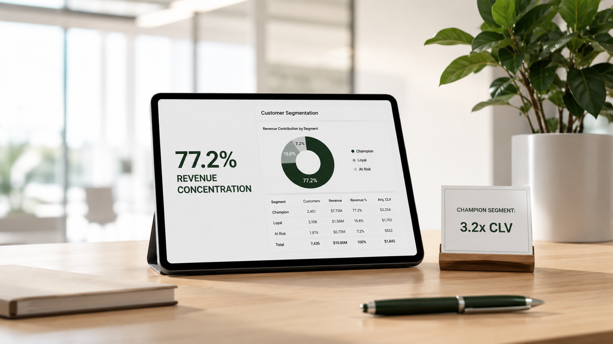

Case studies / Customer lifetime value and retention
A top customer was worth about 40x an at-risk customer

The question
Averages hide how unevenly customers are worth. This analysis asks who the most valuable customers are, how much of the revenue rests on them, and where lifetime value is leaking.
The numbers
- Champion customer lifetime value (£8,767) against an At-Risk customer (£220)Observed in the data40x
- Champion customer lifetime value against the average customerObserved in the data3.2x
- Share of sales from the top 20% of customersObserved in the data77.2%
- Extra lifetime revenue if 5% of Potential Loyalist customers (95 people) became LoyalModeled estimate, not realised revenue£395,580
Observed figures are measured directly in the dataset. Modeled figures are what-ifs built from it, not savings or forecasts.
Findings
- The largest segment, Potential Loyalists, is 33% of customers and contributes only 12.6% of revenue. The Loyal tier is a slightly smaller group but generates 55.2% of all sales.
- The business is highly domestic: 82.8% of revenue comes from the UK.
- There is a large November spike, driven by first-time holiday shoppers, not by existing top customers spending more.
- Revenue is concentrated in a few product lines, while several peripheral categories return almost nothing.
What the modeled estimates show
These are what-if estimates from the recommendations, each assuming that 5% of a group changes behavior. They are not realised revenue.
- Protect Champions: preventing 5% churn in the top tier (28 accounts) protects about £245,476 in lifetime value.
- Upgrade Potential Loyalists: moving 5% of that segment (95 customers) to Loyal adds an estimated £395,580.
- Convert November shoppers: keeping 5% of the unique November cohort (80 customers) captures about £65,520 in baseline lifetime value.
What the audit concluded
RecommendationProtect Champions first, move Potential Loyalists up with a timed follow-up after their first delivery, and treat November first-time buyers as a conversion problem rather than expecting top customers to spend more.
Methodology
- Cleaning: Power Query handles the ETL, including the roughly 23% of records with no customer ID (guest checkout), which are excluded from the segmentation.
- Model: Power Pivot relational model over more than a million rows.
- Segmentation: a custom threshold-based RFM score (recency, frequency, monetary value) places each customer in a named segment.
- Lifetime value: historical customer lifetime value, calculated from past spend per customer.
Limitations
- About 23% of raw records had no customer ID and were excluded, so total revenue is understated and guest behavior is not mapped.
- Lifetime value here is a historical measure, not a predictive model. RFM scoring also tends to penalise holiday-only shoppers, which can mislabel healthy Q4 buyers as At Risk during summer months.
- With 82.8% of revenue from the UK, the segments should not be generalised to international customers.
- The impact estimates assume that 5% of a group can be moved. Nothing in the data tests whether the proposed offers would work.
- The dataset is public, not client data.
Report and source files
- Watch the 3-minute walkthrough (video)
- Methodology and findings (GitHub)
- Download the interactive Excel workbook
Run this audit on your store
Want to know how much of your revenue rests on a small group of customers? I run this kind of audit on your own order data, for a fixed fee agreed before any work starts. The first call is free.
Book a free 30-minute profit call